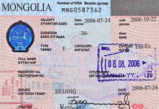

Visa
Visas are available from the Mongolian Embassy or consulate office in your or a neighboring country. For all information related to consular matters, please contact the nearest diplomatic or consular mission of Mongolia by telephone or E-mail. Those of you who travel from the countries with no Mongolian Embassy or consulate office can obtain visas by two ways: apply for a visa at the closest country or obtain visa upon arrival. To avoid risks that can come up upon on your arrival at Mongolian ports of entry due to possible miscommunication, visitors are highly advised to apply and receive Mongolian visas from the Mongolian Embassy or Consular Offices in your home country in advance of travelling.
A tourist visa (30 days validity, arrival within 3 months of issue) application for Mongolia requires the following documentation:
- Passport with a validity date at least six months beyond the end of the applicants intended period of stay in Mongolia
- Visa Application Form for Tourists with one passport size photo
- A letter of invitation from the host company in Mongolia (if on an organized tour, a copy of a letter from the tour company indicating the dates of the tour)
- Visa fee: The visa fee depends on the Embassy or Consular office
- Before you ask Visit Mongolia for an invitation letter, please check whether you need visas to Mongolia. According to some mutual governmental agreements, citizens of certain countries do not need visas to Mongolia.
List of Countries and Regions without Mongolian Visa:
Citizens of the following countries and territories do not require a visa to visit Mongolia for 90 days:
- United States (6 Jul 2001)
- Georgia
- Kazakhstan (2 Mar 1994)
- Kyrgyzstan (4 Dec 1999)
- Macao (3 Jul 2004)
- Serbia (8 Nov 2013)
- Belarus (4 Sep 2013)
- Ukraine
Citizens of the following countries do not require a visa to visit Mongolia for 30 days.
- Canada (1 Jan 2014)
- Cuba (8 Oct 2001)
- Germany (1 Sep 2013)
- Israel (12 Mar 1996)
- Japan (1 Apr 2010)
- Laos (14 Oct 2007)
- Malaysia (6 Jun 1994)
- Turkey (11 Apr 2014)
- Thailand (13 Jan 2008)
- Russia (14 Nov 2014)
Citizens of the following countries do not require a visa to visit Mongolia for 21 days.
- Philippines (13 May 1994)
Citizens of the following countries and territories do not require a visa to visit Mongolia for 14 days.
- Hong Kong (18 Jun 1998)
- Singapore (9 Mar 1990)
On June 12, 2014 the Mongolian Government decided to wave visas for the passport holders of following 42 countries until the end of year 2015 to promote the tourism industry of the country:Andorra, Austria, Argentina, Bahamas, Belgium, Bulgaria, Brazil, Chile, Costa-Rica, Croatia, Cyprus, Czech Republic, Denmark, Estonia, Finland, France, Gibraltar, Greece, Grenada, Hungary, Iceland, Ireland, Italy, Latvia, Liechtenstein, Lithuania, Luxembourg, Malta, Monaco, Netherlands, Norway, Panama, Poland, Portugal, Romania, Slovakia, Slovenia, Spain, Sweden, Switzerland, United Kingdom, and Uruguay.